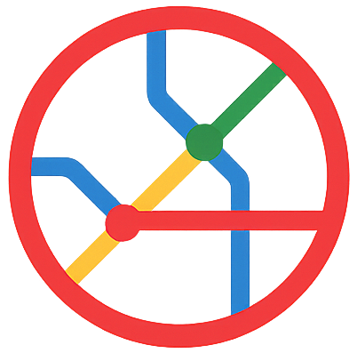
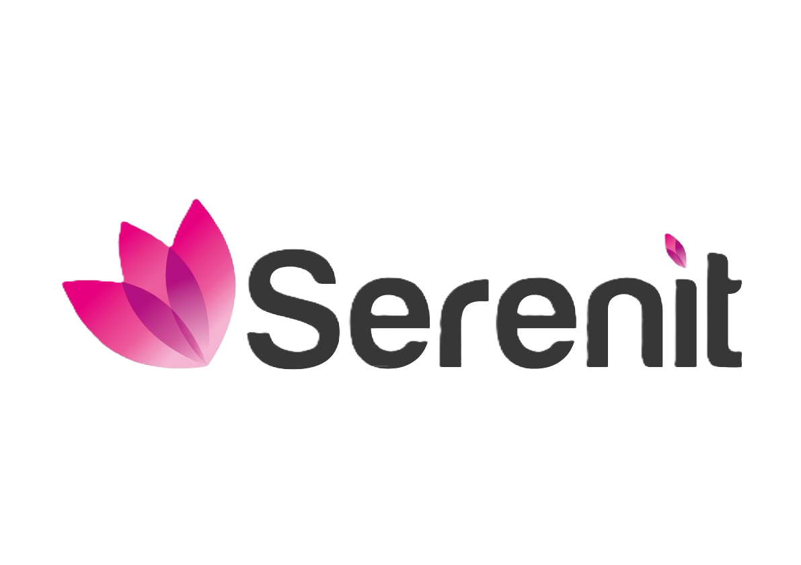
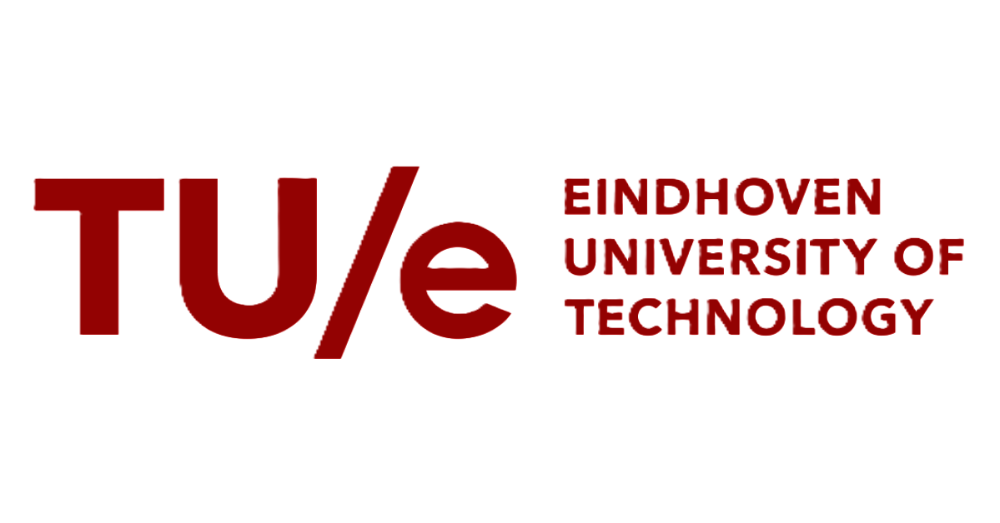
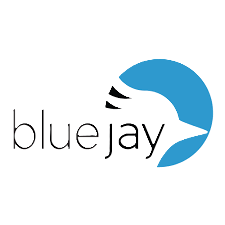

Hi, I'm Bram! I am a Sr. Data-/BI-Specialist currently working at UWV with a MSc background in Human-Technology Interaction engineering. I turn complex raw data into intuitive user-focused products that drive real organizational and societal impact. From research and design to constructing ETL pipelines, backend infrastructure and doing frontend development. Aside from technical skills, what make me the most enthusiastic about what I've collaborated on so far, are those projects where I got to keep my stakeholders in the loop during the whole process to finally deliver something that truly met their needs and had a real impact. I like applying user-centered design methods in whatever technical projects I do, and to take ownership in doing so from ideation to product hand-over. I thrive in agile teams and take pride in every project I'm involved with, so let’s collaborate and create something powerful together!
-

Owner/Founder, Lost In Translation™ | Amsterdam, Netherlands (Sep 2025 - Present)
Fully crafted, designed and implemented a design-driven e-commerce platform 'disguised' as a travel agency webshop. Powered by personalized-AI, engaging UX, brand-focused storytelling and backed-up by cutting-edge innovation. Maps so wrong, they feel just right. Visit lostintranslation.nl for more info! - Senior BI Advisor & Product Designer, UWV SMZ – Amsterdam, Netherlands (Jul 2025 – Present) Leading development of business intelligence data products within the Division of Social-Medical Affairs. Responsible for ETL pipelines (SQL, SSIS/SSAS, Oracle), integrating external data sources, and advanced DAX modeling. Designed Power BI dashboards tailored to government services in accordance with Dutch social security legislation.
- Data Analyst & BI Specialist, UWV SMZ – Amsterdam, Netherlands (Aug 2024 – Jul 2025) Built and optimized data pipelines and analytics dashboards. Transformed business requirements into data models and managed integration between multiple agency data sources and internal BI tools for a range of stakeholders.
-

Data/BI Specialist, SerenIT – Amsterdam, Netherlands (Jan 2024 – Aug 2024) Delivered custom dashboards and reporting tools to public and private clients. Led stakeholder workshops, defined KPIs, built DAX measures and SQL-based backend queries for data-driven insights. -

Master Thesis Project – TU/e Security Office – Eindhoven, Netherlands (Dec 2022 – Oct 2023) Designed and implemented a student dashboard to support self-regulated learning. Conducted user research, defined requirements with university security officers, iterated wireframes, and implemented the tool using Power BI and UX methodologies. - Frontend Developer, TU/e – Eindhoven, Netherlands (Sep 2022 – Dec 2022) Built modular front-end components (React/Vue) integrated with Typo3, SharePoint, and educational portals. Supported cross-team development on internal tools.
-

UX Designer & Android Developer, Blue Jay – Eindhoven, Netherlands (Jun 2018 – Jun 2020) Designed a healthcare-oriented drone interface and mobile app. Played a full role in UX research, iterative testing and final app delivery, including voice recognition features and mood-sensitive lighting. Worked in an Agile team using Scrum.
- MSc Human‑Technology Interaction
TU/e – Eindhoven, Netherlands - Erasmus MSc Computer Science
KTH – Stockholm, Sweden - Erasmus MSc Interactive Media Technology
KTH – Stockholm, Sweden - BSc Psychology & Technology
TU/e – Eindhoven, Netherlands
-
Dutch
Native
-
English
Near-native | Professional
-
Swedish
Convesational


- Data Storytelling with PowerBI & Python – Edureka (2025)
- Python for Data Science & Engineering – IBM (2025)
- UX Design – Google (2025)
- Advanced BI Developer – Computrain (2024)
- Advanced SQL Programmer – Computrain (2024)
- Lost In Translation™ | Global Transit, Local
Nonsense™
I created a design-driven travel agency webshop for custom-tailered, gloriously inaccurate and personality-driven metro- and city maps. Powered by personalized-AI, an engaging UX with brand-focused storytelling at its foundation, backed-up by cutting-edge innovation. By whom? One of our questionably qualified AI-travel assistants. Are they professional? No. Entertaining? Absolutely. Keep an eye out on lostintranslation.nl! - TU/e Student Dashboard
I designed and validated a Canvas-integrated student dashboard that supports self-regulated learning. The project was tested through scientific A/B-studies in the Human-Technology Interaction context at TU/e. - Blue Jay – The ‘Emotional’ Drone
I co-designed and developed a healthcare drone with intuitive interfaces such as dynamic lighting and expressive LCD “eyes.” I also built an Android app for real-time tracking, emergency detection, and voice control. - Doula | UX/UI Case Study
I completed a 10-hour UX/UI case study to redesign an outdated pregnancy app. Through user research and usability testing, I identified pain points and transformed both the visual design and overall user experience. - Rasperries Shopping Assistant
I designed a shopping assistant concept that empowers customers to choose when to receive help, reducing stress in crowded retail environments and improving accessibility for introverted shoppers. - Reimagining Spotify Podcasts
At KTH, I worked on revamping Spotify’s podcast section using the Double Diamond framework. I conducted user research, defined key challenges, and prototyped solutions that improved navigation, community features, and content discovery.
-
Business Intelligence | Advanced Power BI service & governance, DAX modeling, RLS/OLS, SSIS/SSAS, Azure Data Factory, data quality & lineage, GDPR-compliant reporting, policy-driven KPIs, performance tuning, paginated reports, stakeholder-ready dashboards for agencies
- BI & Data Analytics | ExpertPower BI, DAX, SQL, Oracle, Azure, SSIS/SSAS, ETL, data mining & modeling, advanced analytics
- UX/UI & Interaction Design | AdvancedFigma, Adobe XD, wireframing, prototyping, usability testing, user flows, cognitive walkthroughs, design systems
- Frontend Development | ProficientHTML, CSS, JavaScript, TypeScript, React, Vue.js, Kotlin (Android), REST API integration
- Cognitive & Behavioral Insight | AdvancedBehavioral research methods, human cognition & perception, human‑robot interaction, persuasive & ethical design
- Research & Methodology | ExpertUser research, stakeholder interviews, Double Diamond, self‑regulated learning theory, storytelling, A/B testing
- Tools & Platforms | ProficientSharePoint, Typo3, Git, Microsoft Azure, Power Automate, JIRA, Confluence, Databricks
- Agile & Scrum Delivery | IntermediateSprint planning, backlog refinement, iterative development, stakeholder management, cross‑functional teamwork, demos & presentations, user stories
-
Project Start-Up & Stakeholder Management | Advanced Discovery → scoping → kickoff, stakeholder mapping & RACI, requirements elicitation, risk/RAID logs, delivery roadmap & milestones, change management & comms plans, workshop facilitation, exec updates, cross-functional alignment